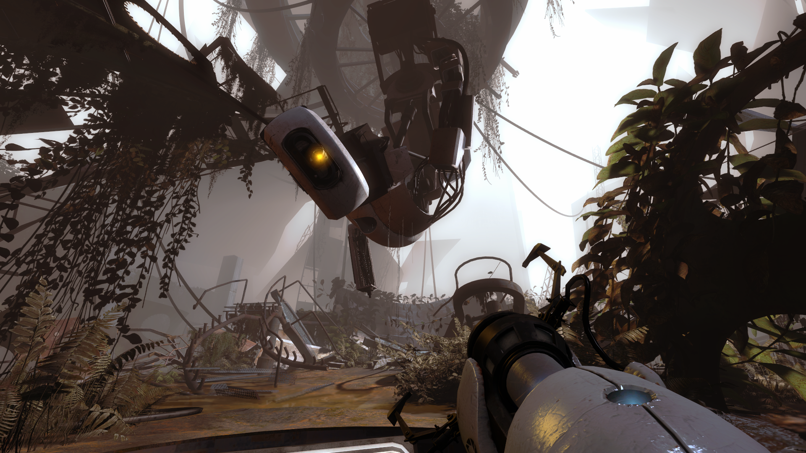

Corehub level reuse
A PSBR researcher describes a converted Corehub level retaining older triggers, a fling pit and Portal-era music logic.
PSBR ↗ · community discussion, not an official build changelog
A transitional build with traces of earlier Corehub layout and scripting visible in later campaign scenes.
A PSBR researcher describes a converted Corehub level retaining older triggers, a fling pit and Portal-era music logic.
PSBR ↗ · community discussion, not an official build changelog
The community build index labels August 2010 as 852_3.
PSBR ↗ · community discussion, not an official build changelog
Some August-era levels preserve triggers, script patterns and musical cues originally developed for the older CoreHub campaign. The reused material is not evidence that all CoreHub scenes were still canonical.
Early ending footage reveals ideas and timing that differ from the final Wheatley boss battle and ending cutscene; some shots are unfinished.
The recovered 852_3 build shows continued work on campaign order and scripted interactions, before the September 2010 revisions.
Screenshots from repacked or fixed versions should be identified by original depot, map and modifications; the linked video is for the August era, not a Valve-authored official trailer.
These notes draw on PSBR and VCC server discussions and associated historical footage, not a Valve changelog. See the dated Hidden Palace prototype record ↗ for depot identification. Related-era video is not proof that every scene came from this exact revision.
This artwork comes from Valve's later Portal 2 development and The Final Hours of Portal 2. It documents the evolving visual identity, character designs and discarded concepts of the finished game's production. These are contextual comparisons, not screenshots or proof that any pictured artwork existed in this exact dated prototype.
FULL SOURCE ART INDEX ↗
Later environmental concept development.
VIEW ORIGINAL ART RECORD ↗
Portal 2 final-era underground art.
VIEW ORIGINAL ART RECORD ↗
Unreleased presentation concept from The Final Hours.
VIEW ORIGINAL ART RECORD ↗
Later Portal 2 player-character concept.
VIEW ORIGINAL ART RECORD ↗Screenshots are preserved from community-server research. Each image links to its source discussion.
